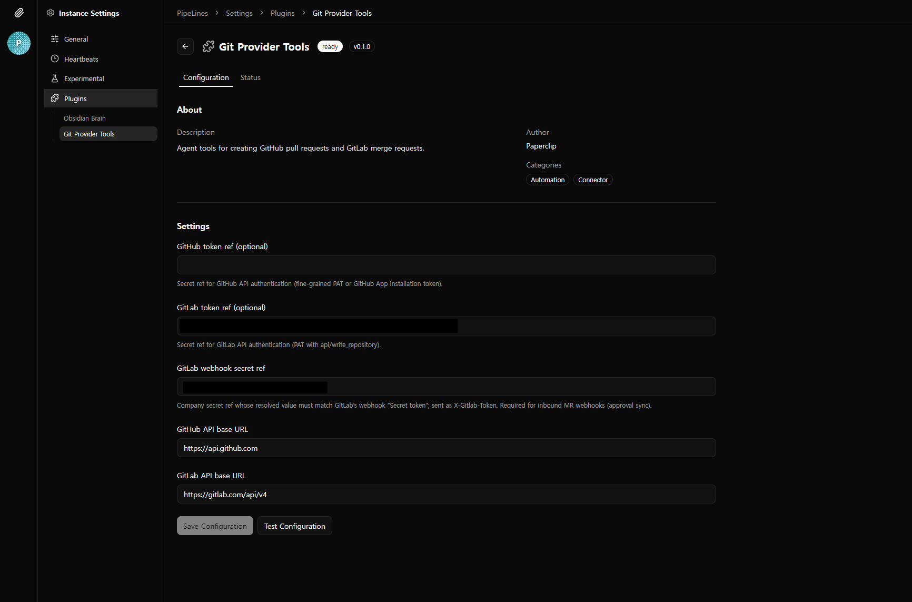
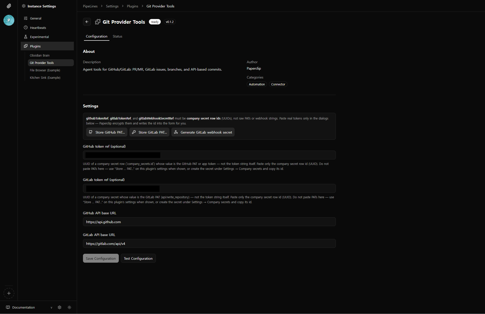
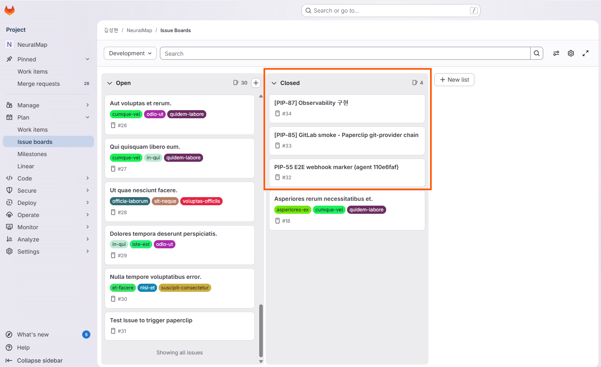
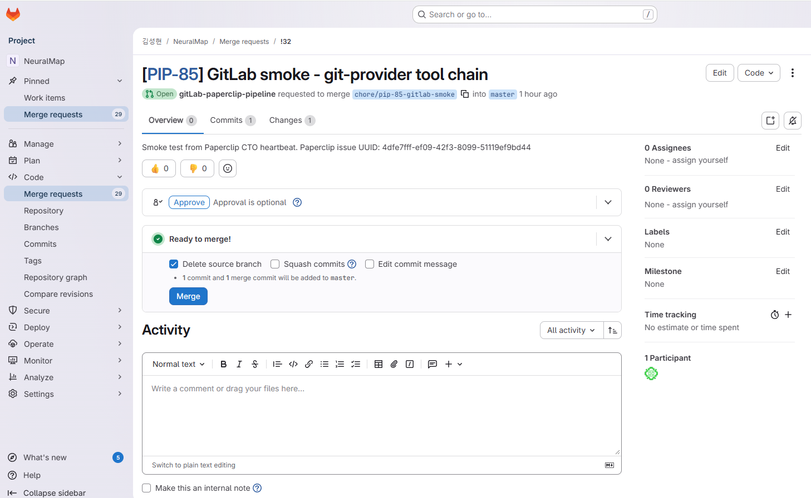

GitLab 플러그인 — 프롬프트에서 자동화로
paperclip.git-provider 플러그인으로 GitLab과 연동합니다. 에이전트가 LLM 턴에서 도구를 직접 호출하던 방식을 서버 비동기 이벤트 훅으로 전환한 것이 핵심 변경입니다.
왜 에이전트에게 맡기지 않았는가
처음에는 에이전트 프롬프트에 "Paperclip 이슈를 만들면 GitLab에도 올려"라고 지시했습니다. 에이전트가 gitlab.create_issue 도구를 호출하는 방식이었지만, 두 가지 구조적 문제를 발견했습니다.
-
1단계: 프롬프트 방식으로 시작
에이전트 프롬프트에 GitLab 동기화 절차를 상세히 기술. 에이전트가 이슈 생성 후 LLM 턴 안에서
gitlab.create_issue등 도구를 호출하도록 설계. - 2단계: 문제 발견 — 토큰 낭비 + 비결정성 매 호출마다 토큰이 소모되고, 에이전트가 "잊으면" 동기화가 누락됨. 결정적(deterministic)인 작업에 LLM을 쓰는 것은 과잉 설계라는 판단.
-
3단계: 서버 비동기 이벤트 훅으로 전환
이슈 생성·상태 변경 이벤트를 서버가 감지해
toolDispatcher.executeTool로 직접 GitLab API를 호출. 에이전트 토큰 제로, 100% 실행.
아키텍처 비교
에이전트가 LLM 턴에서 gitlab.create_issue 호출
- 매 호출마다 토큰 소모
- 잊으면 동기화 누락
- 프롬프트에 절차를 상세히 기술해야 함
서버가 이벤트 감지 → toolDispatcher로 직접 호출
- 에이전트 입력 관점 토큰 제로
- 이벤트 기반, 누락 불가
- fire-and-forget, 실패해도 본 흐름 무영향
"결정적 작업에 LLM을 쓰지 않는다." — Paperclip 이슈가 만들어지면 GitLab에도 반드시 올라가야 합니다. 이것은 판단이 필요 없는 결정적 작업이므로, 코드로 확실히 실행하는 것이 맞습니다. LLM은 판단이 필요한 곳에만 씁니다.
Plugin Settings — Git Provider
UI에서 Git Provider Tools 플러그인을 켜고, 자동 동기화·프로젝트·시크릿을 구성하는 화면입니다.


구현: 비동기 동기화 서비스
server/src/services/gitlab-issue-sync.ts — 핵심 두 함수와 가드 조건입니다.
| 함수 | 트리거 | 동작 |
|---|---|---|
onIssueCreated |
Paperclip 이슈 생성 직후 | GitLab 이슈 생성. 제목에 [ISSUE-123] 식별자, 구조화된 description. 엔티티 링크·코멘트는 플러그인 워커가 처리. |
onIssueStatusChanged |
Paperclip 이슈 상태 변경 | done/cancelled → GitLab close, todo/in_progress → GitLab reopen. 링크된 이슈가 없으면 무시(멱등). |

가드 조건
다음 세 조건이 모두 만족할 때만 실행됩니다. 모든 호출은 void(fire-and-forget)로, 실패 시 로그만 남기고 HTTP 응답·이슈 API에는 영향 없습니다.
- 플러그인 설치 여부 확인
autoSyncIssues설정 활성화defaultGitlabProjectId존재
수정된 파일
| 파일 | 변경 |
|---|---|
routes/issues.ts | 시그니처에 gitlabSync? 추가. POST/PATCH 후 비동기 호출. |
app.ts | 서비스 생성, issueRoutes를 플러그인 초기화 이후로 이동해 toolDispatcher 주입 |
services/index.ts | export 추가 |
gitlab-integration-prompt.ts | 자동 동기화 활성 시 에이전트에 "이슈 생성은 서버가 처리" 안내 |
manifest.ts | autoSyncIssues + defaultGitlabProjectId 설정 옵션 추가 |
플러그인 전체 구성
비동기 이슈 동기화는 서버 측 경로이고, 아래는 paperclip.git-provider 플러그인의 전체 역할입니다.
- 인증·시크릿: GitLab PAT는 설정에 직접 넣지 않고
company_secrets행 UUID로만 참조(gitlabTokenRef). 웹훅 검증용 시크릿도 동일 패턴. 토큰 문자열이 프롬프트·로그에 노출되지 않습니다. - 에이전트 도구 (GitLab REST): MR 생성, 이슈 조회·노트·라벨/상태 갱신, 파이프라인 상태, MR 디스커션 등 — 판단이 필요한 GitLab 작업은 여전히 에이전트 도구로 수행.
- MR ↔ 승인 브리지: GitLab MR 웹훅(
X-Gitlab-Token검증)으로approved/unapproved액션을 받아, 매핑된 플랫폼 이슈 승인을 멱등으로 해소. - 런타임 프롬프트: 플러그인 활성 시 통합 가이드 마크다운을 실행 프롬프트에 합성. 자동 동기화 활성 시 이슈 생성 중복 방지 안내 포함.

설정 방법
- Paperclip UI → Plugin Settings → Git Provider Tools → Configuration
- Auto-sync Paperclip issues to GitLab 활성화
- Default GitLab project for auto-sync에 프로젝트 ID 또는 경로 입력
- 이후 Paperclip에서 이슈를 만들거나 상태를 바꾸면 GitLab에 자동 반영